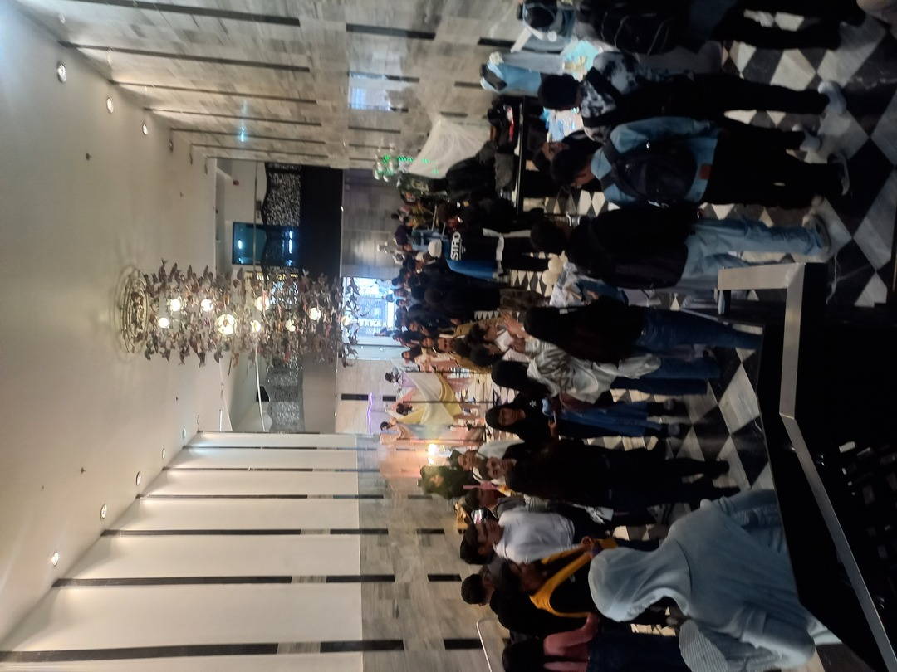

Una experiencia académica donde el diseño, el color, la creatividad y la tecnología se encontraron para transformar nuestra manera de observar el mundo.
Explorar experienciaComprender cómo el color influye en la percepción visual, la comunicación y la experiencia de usuario.
Relacionar conceptos creativos con el desarrollo de interfaces digitales modernas y accesibles.
Fortalecer competencias técnicas mediante contenido académico presentado en español e inglés.
Desde el momento en que llegué al evento sentí que no se trataba únicamente de una exposición relacionada con moda. El ambiente estaba cuidadosamente diseñado para despertar curiosidad. Las instalaciones artísticas ubicadas en la entrada funcionaban como una invitación para observar con más atención los detalles que solemos pasar por alto.
Mientras recorría el hall principal pude apreciar diferentes propuestas visuales donde el color, los materiales y la iluminación se convertían en elementos narrativos. Cada exposición parecía contar una historia distinta y mostraba cómo el diseño puede comunicar emociones sin necesidad de utilizar palabras.
Como estudiante ADSO, encontré una conexión muy clara entre la industria creativa y el desarrollo de software. En ambos casos se diseñan experiencias para personas. Así como una colección de moda transmite identidad, una interfaz web también comunica valores, emociones y objetivos mediante colores, formas y organización visual.
Sara Viloria nos invitó a comprender que el color no es simplemente un elemento decorativo. Según su visión, cuando aprendemos a observar el color de manera consciente, descubrimos nuevamente el mundo. El color genera respuestas conscientes, subconscientes e inconscientes.
Uno de los conceptos más interesantes fue definir el color como un "lenguaje caprichoso". A lo largo de la historia existieron pigmentos extremadamente costosos cuyo proceso de obtención implicó explotación humana y prácticas crueles.
También analizamos el comportamiento físico del color. Por ejemplo, una banana se observa amarilla porque refleja determinadas longitudes de onda y absorbe otras.
Aprendimos la importancia del sistema Pantone como estándar internacional para la identificación precisa del color en procesos de diseño y producción.
El cerebro interpreta los colores dependiendo del contexto visual. Por ello, un mismo color puede percibirse de forma diferente según la iluminación, los colores cercanos y la experiencia individual.
Sara cuestionó las explicaciones tradicionales que afirman que cada color tiene un significado universal. Argumentó que la interpretación depende de la cultura, la experiencia personal y los recuerdos de cada persona.
"El color es la promesa, el material es la ejecución."
Sara Viloria explained that color is far more than decoration. Understanding color allows us to rediscover the world through a new perspective. Color creates conscious, subconscious and unconscious responses.
Color was described as a "capricious language". Throughout history, some pigments were extremely expensive and their production involved exploitation and cruelty.
We also explored the physical behavior of color. A banana appears yellow because it reflects certain wavelengths while absorbing others.
Pantone provides a standardized color identification system used worldwide in design and production.
Human perception changes according to context, lighting and personal experiences.
Sara argued that color meanings are not universal. Personal experiences and cultural background strongly influence interpretation.
"Color is the promise, material is the execution."
Esta frase resume la enseñanza más importante de la conferencia. Aprendí que el color está presente en cada momento de nuestra vida y que influye constantemente en nuestras emociones, decisiones y experiencias, incluso cuando no somos conscientes de ello.
Mi llegada al evento marcó el inicio de una experiencia académica diferente. Desde los primeros pasos pude notar cómo el diseño, la creatividad y la innovación estaban presentes en cada detalle del espacio.
En el hall principal encontré diversas exposiciones relacionadas con la moda y la comunicación visual. Fue un primer acercamiento a los conceptos que posteriormente se desarrollarían durante la conferencia.
Antes de iniciar la conferencia, el ingreso al teatro generó expectativa entre los asistentes. El ambiente estaba preparado para una jornada de aprendizaje centrada en el color, la percepción visual y el diseño.

Al finalizar el evento me llevé nuevas perspectivas sobre el color, la comunicación visual y la relación entre la creatividad y el desarrollo tecnológico, conocimientos que puedo aplicar en futuros proyectos de software.
Finalización de una experiencia enriquecedora y llena de aprendizajes.
| English | Español | Definition |
|---|---|---|
| Cloud Computing | Computación en la nube | Servicios ofrecidos por internet. |
| Color Theory | Teoría del color | Estudio de la percepción visual. |
| Pantone | Pantone | Sistema estandarizado del color. |
| Hue | Tono | Clasificación principal de un color. |
| Saturation | Saturación | Pureza del color. |
| Chroma | Croma | Intensidad visual del color. |
| Value | Valor | Claridad u oscuridad. |
| Monochromatic | Monocromático | Basado en un solo color. |
| Analogous Colors | Colores análogos | Colores cercanos. |
| Complementary Colors | Complementarios | Colores opuestos. |
| Visual Semiotics | Semiología visual | Interpretación de signos visuales. |
| Circular Economy | Economía circular | Aprovechamiento eficiente de recursos. |
| Responsive Design | Diseño responsivo | Adaptación a diferentes dispositivos. |
| Frontend | Frontend | Interfaz visible para el usuario. |
| User Experience | Experiencia de Usuario | Interacción entre usuario y producto. |
La sostenibilidad no es exclusiva de la industria de la moda. Como desarrolladores también debemos optimizar recursos, reutilizar componentes, reducir residuos digitales y construir soluciones eficientes.
La economía circular promueve la reutilización, el aprovechamiento inteligente de materiales y la disminución del impacto ambiental. Estos principios pueden aplicarse tanto a productos físicos como al desarrollo de software.
Un código limpio, optimizado y bien estructurado también es una forma de responsabilidad organizacional y compromiso con la sostenibilidad tecnológica.